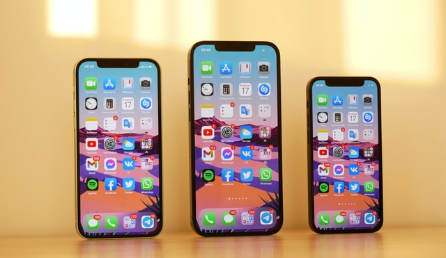
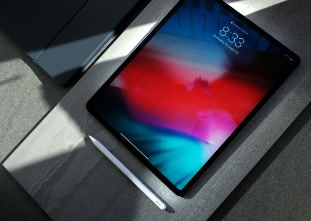
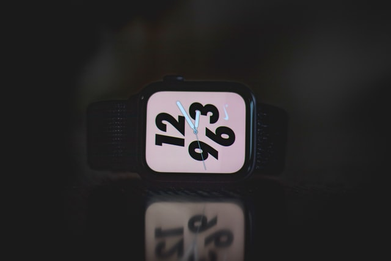

Products
현재 애플의 제품은 크게 맥과 아이폰, 아이패드, 애플워치, 에어팟으로 나눈다. 맥 은 애플의 macOS(빅서)를 OS를 탑재한 컴퓨터 이름이다. 데스크톱으로는 iMac, Mac mini, Mac Pro, 노트북으로는 MacBook, MacBook Air, MacBook Pro가 있다. 과거에는 인텔 칩을 사용하였시만 최신 Mac 제품은 자체제작한 M1 칩을(맥 미니, 맥북, 맥북프로, 아이패드프로, 아이맥) 사용하고 있다.
Mac
맥은 크게 데스크탑 모델인 아이맥, 맥미니, 맥프로가 있으며 노트북 모델은 맥북에어, 맥북프로 구성되어있다.
iphone
 2007년 맥월드 엑스포의 키노트에서 스티브 잡스는 아이폰을 소개하였다. 이 제품은 인터넷 기기, 모바일 폰과 아이팟이 결합된 제품이다. iOS를 탑재하고 있다. 사파리 웹 브라우저, 전자 메일, 내비게이션과 같은 다양한 응용 프로그램을 사용할 수 있다. 아이폰은 2007년 6월 29일에 처음으로 시장에 선보였다. 아이폰은 이후 수차례의 업그레이드를 실시하여 현재(2021년) 기준으로 가장 최신 모델은 아이폰 12, 아이폰 12 미니, 아이폰 12 프로, 아이폰 12 프로 맥스가 있다.
ipad
2010년 4월 3일, 애플은 태블릿 PC인 아이패드를 출시한다. 운영 체제는 iOS이며, 와이파이 모델과 와이파이+3G 네트워크 모델이 있다. 2021년 기준으로 가장 최신 제품은 아이패드 에어 4세대, 아이패드 미니 5세대, 아이패드 8세대 그리고 아이패드 프로 5세대이다.
Apple watch
애플이 판매하는 스마트워치로, 2014년 9월 9일에 미국 캘리포니아 쿠퍼티노 디앤자 단과대학 플린트센터에서 발표했다. 런칭 제품으로는 화면 1.5 인치 제품과 1.65 인치 제품으로 나뉘고, 이를 또 다시 애플 워치(Apple Watch), 애플 워치 스포츠(Apple Watch Sport), 애플 워치 에디션(Apple Watch Edition) 으로 나뉜다.